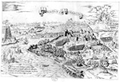

Bologna in Francia. Questo e il vero ritratto di Bologna in francia occupato dal re d’inghilterra, et al presento assediato dal christianissimo re di francia [...]. Kopergravure, 285 x 445 mm. [Rome of Venetië, circa 1555.] -- (COLLBN 002-01-011)
In het jaar 1549 had de Franse koning Hendrik II het beleg geslagen rond het Engelse bruggehoofd Boulogne, dat in 1544 door Hendrik VIII van Engeland was veroverd. De stad werd in 1550 aan Frankrijk teruggegeven bij de vrede die beide landen toen sloten. Enkele jaren daarna werd deze prent in Italië uitgegeven. Ze is een vroeg voorbeeld van een topografisch bedoelde weergave van een oorlogshandeling. Veel meer dan een poging zouden wij het, met onze moderne middelen en mogelijkheden van realiteitsweergave, natuurlijk niet noemen. Toch bevatte deze manier van presenteren voor onze zestiende- en zeventiende-eeuwse voorouders kennelijk alle gewenste informatie over de gang van zaken, want deze panoramische en afstandelijke kijk op het strijdgewoel is vele decennia lang toonaangevend geweest.
Kenmerkend voor de manier van uitbeelden is dat de onderscheiden gevechtseenheden als het ware stuk voor stuk worden opgesomd, zodat we kunnen inschatten hoeveel mankracht er wel nodig was om het gestelde doel te bereiken. Een andere karakteristiek van de zich hier uitkristalliserende ‘reportage’-methode is dat er op troepen-bewegingen en het overbrengen van bevelen geduid wordt door middel van de enkelingen en de kleine groepjes die zich in de open plekken naast de massale carrés ophouden of heen en weer snellen.
Topografische details als de door de Romeinse keizer Caligula gebouwde vuurtoren van twaalf verdiepingen, de havenmonding en de citadel ter zijde van de eigenlijke stad moeten een schijn van geografische precisie wekken. De graveur heeft kennelijk geweten dat ‘Bologna in Francia’ er totaal anders uitzag dan het Italiaans Bologna, dat in een vlakte is gelegen. Zo hoefde hij niet de fout te maken om Boulogne weer te geven als Bologna -- en tóch maakt het geheel de indruk alsof er eigenlijk een Italiaanse situatie is uitgebeeld in plaats van een Noord-Franse.
Literatuur
- R.V. Tooley. ‘Maps in Italian atlases of the sixteenth century’, in: Imago mundi, 3 (1939), p. 12-47, hier p. 24, nr. 140.
- C. Koeman, ‘Krijgsgeschiedkundige kaarten’, in: Armamentaria, 8 (1973), p.27-41.
- D. de Vries, ‘Atlases and maps from the library of Isaac Vossius’, in: International yearbook of cartography, 21 (1981), p. 177-194, hier p. 186, nr. 11.
| vorige pagina | top pagina |